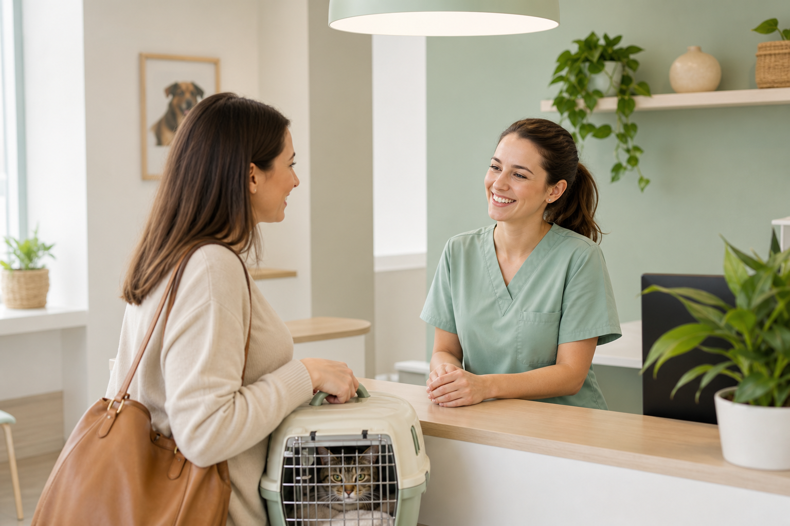
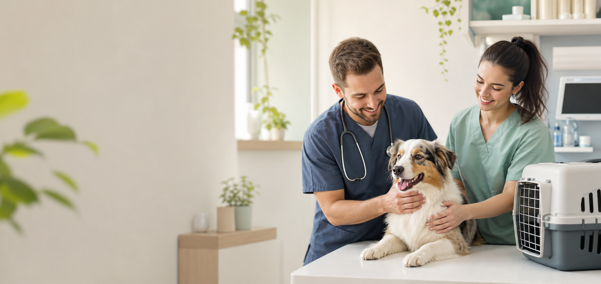
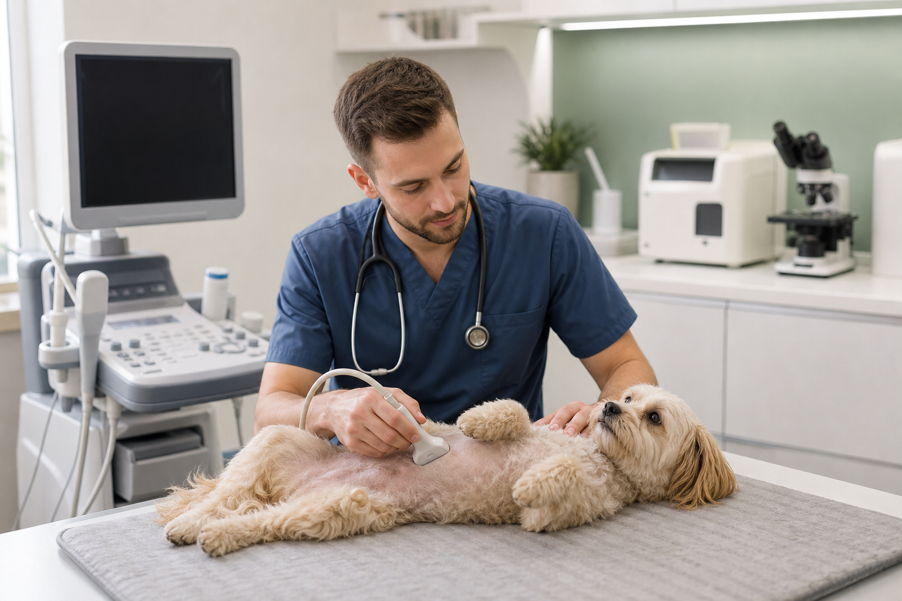

Écoute
Une prise en charge claire, respectueuse du rythme de votre compagnon.
Chiens, chats et petits NAC
Le bien-être de vos compagnons, notre priorité.
Un cabinet vétérinaire moderne et attentionné pour prévenir, soigner et accompagner chaque animal avec calme, précision et douceur.
Urgence : appelez le cabinet avant de vous déplacer.
Presentation
Les Pattes Heureuses accueille les chiens, les chats et les petits NAC dans un cadre lumineux, propre et rassurant. Notre approche combine prévention, pédagogie et équipements modernes pour limiter le stress de l'animal comme celui de son humain.
Chaque consultation laisse le temps d'expliquer le diagnostic, les soins possibles et les bons gestes à la maison. Les informations essentielles sont centralisées ici pour vous aider à préparer votre visite sans multiplier les appels.
Une prise en charge claire, respectueuse du rythme de votre compagnon.
Vaccins, bilans, nutrition et conseils pour agir avant les complications.
Un dossier medical actualise et des recommandations faciles a comprendre.
Services
Des consultations courantes aux actes techniques, le cabinet couvre les besoins les plus fréquents des animaux de compagnie.
Examen général, dermatologie courante, boiteries, suivi senior et conseils.
Protocoles adaptés à l'âge, au mode de vie et aux voyages prévus.
Stérilisations, petites chirurgies et surveillance post-opératoire attentive.
Détartrage, extraction si nécessaire, prévention de la douleur buccale.
Sang, urine et tests rapides pour orienter les décisions sans attendre.
Échographie et radiographie numérique pour explorer sans geste invasif.
Animaux pris en charge
Chiots, adultes, seniors, petits et grands formats.
Consultations calmes, manipulation douce et conseils comportement.
Vaccination, alimentation, dents et suivi digestif.
Nutrition, griffes, dents et troubles respiratoires courants.
Prevention, vaccination et conseils de vie quotidienne.
Galerie



Équipements
Examens non invasifs pour explorer abdomen, gestation et organes internes.
Analyses sanguines et urinaires courantes disponibles rapidement.
Images nettes pour fractures, arthrose, thorax et suivi chirurgical.
Monitoring, anesthésie surveillée et parcours post-opératoire lisible.
Notre équipe
Médecine générale, chats anxieux, prévention senior.
Chirurgie de convenance, imagerie, suivi douleur.
Auxiliaire spécialisée vétérinaire, accueil et conseils pratiques.
Avis clients
Des retours simples, concrets, et surtout rassurants pour choisir un cabinet où votre compagnon sera vraiment considéré.
“Équipe très douce avec mon chat. Tout a été expliqué clairement, sans précipitation, et je suis repartie avec des conseils faciles à appliquer.”
Avis vérifié · il y a 2 semaines“Rendez-vous pris en ligne, accueil ponctuel, tarif annoncé avant les soins. Le suivi pour mon chien âgé est sérieux et très humain.”
Avis vérifié · il y a 1 mois“Notre lapin a été manipulé avec beaucoup de patience. On a eu des explications précises sur l’alimentation, les dents et les signes à surveiller.”
Avis vérifié · il y a 3 semainesTarifs indicatifs TTC
Les fourchettes peuvent varier selon le poids, l'état de santé et les soins associés. Un devis est remis pour tout acte programmé.
Prise de rendez-vous
Le formulaire ne remplace pas un appel en cas d'urgence. Pour un animal en détresse, contactez directement le cabinet afin d'etre oriente sans attendre.
FAQ
Oui, les consultations se font sur rendez-vous pour limiter l'attente et préparer le matériel nécessaire. Les urgences doivent être signalées par téléphone.
Appelez le cabinet avant de venir. L'équipe vous indiquera si vous devez vous déplacer immédiatement ou contacter un service de garde.
Le cabinet prend en charge les petits NAC les plus courants : lapins, cochons d'Inde et furets. Pour une espèce particulière, contactez-nous avant la prise de rendez-vous.
Apportez le carnet de santé, les traitements en cours, les résultats d'analyses récents et, si possible, quelques photos ou vidéos des symptômes observés.
Contact
12 avenue des Tilleuls
35000 Rennes